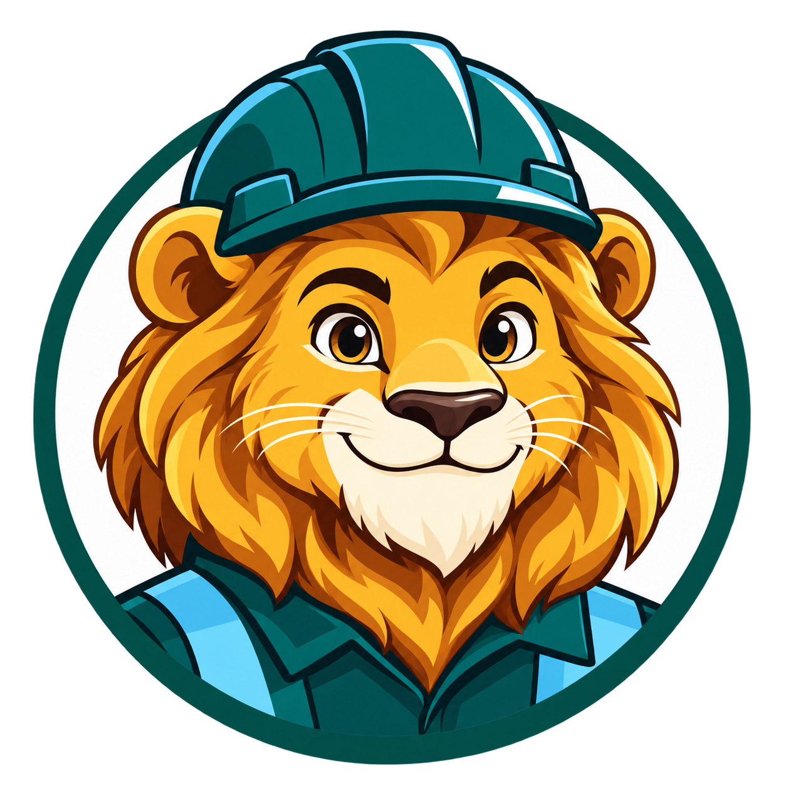

O Simba é o atendente automático do Almoxarifado PDL. Ele ajuda a localizar materiais, consultar códigos e verificar o saldo disponível.
Atenção ao saldo: a quantidade corresponde à última atualização exibida no cabeçalho. Uma retirada ou entrada feita depois desse horário pode ainda não aparecer.
As respostas são voltadas ao atendimento do almoxarifado. Procedimentos, autorizações e escolha de EPI devem ser confirmados com a equipe responsável.
O Simba consulta a base do Almoxarifado PDL para localizar materiais e mostrar o saldo registrado na última atualização.
Cada resultado apresenta o código, a descrição cadastrada e o saldo disponível em destaque. Confira também o horário de atualização no cabeçalho, pois movimentações posteriores podem ainda não estar registradas.
Conte como foi o atendimento do Simba: o que ajudou, o que faltou e o que podemos melhorar.
O formulário abre numa nova aba e leva menos de 1 minuto.
Abrir formulário de feedback